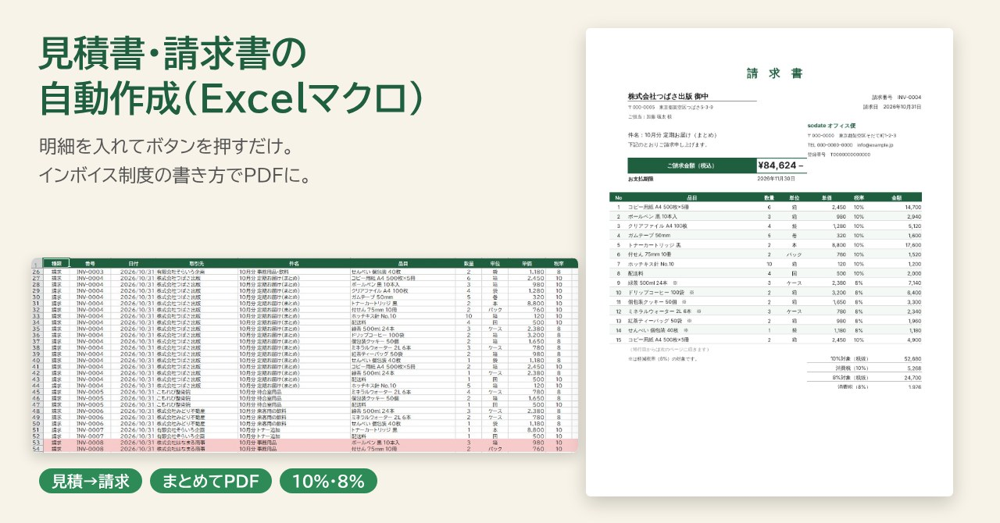
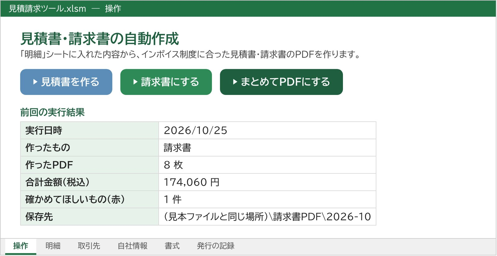
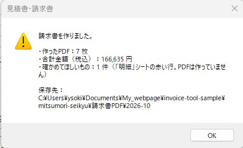
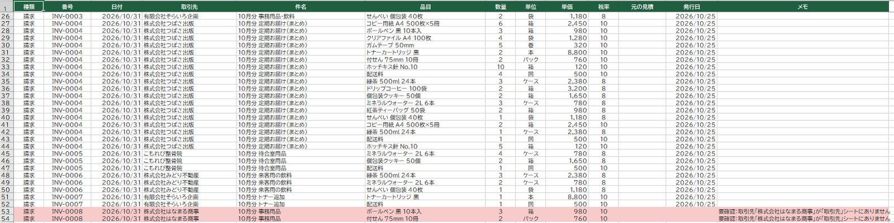
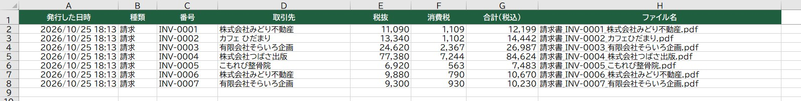
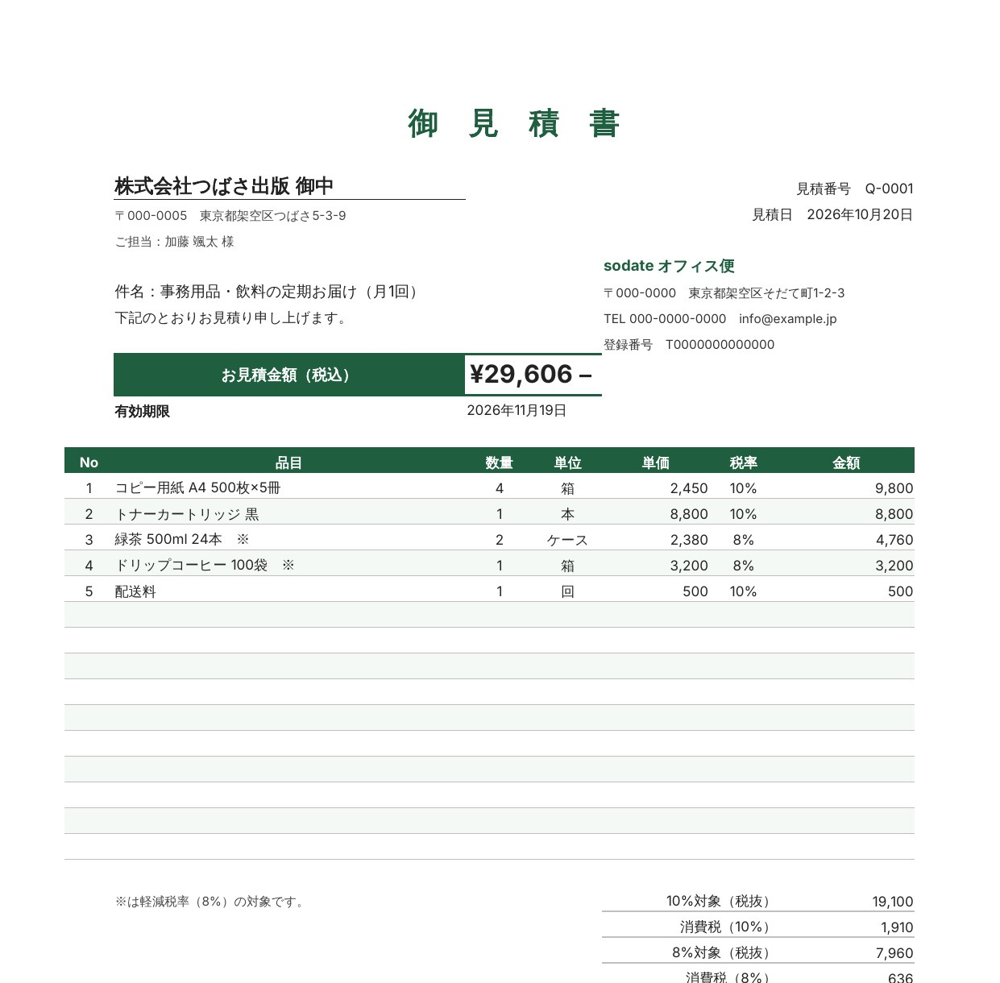
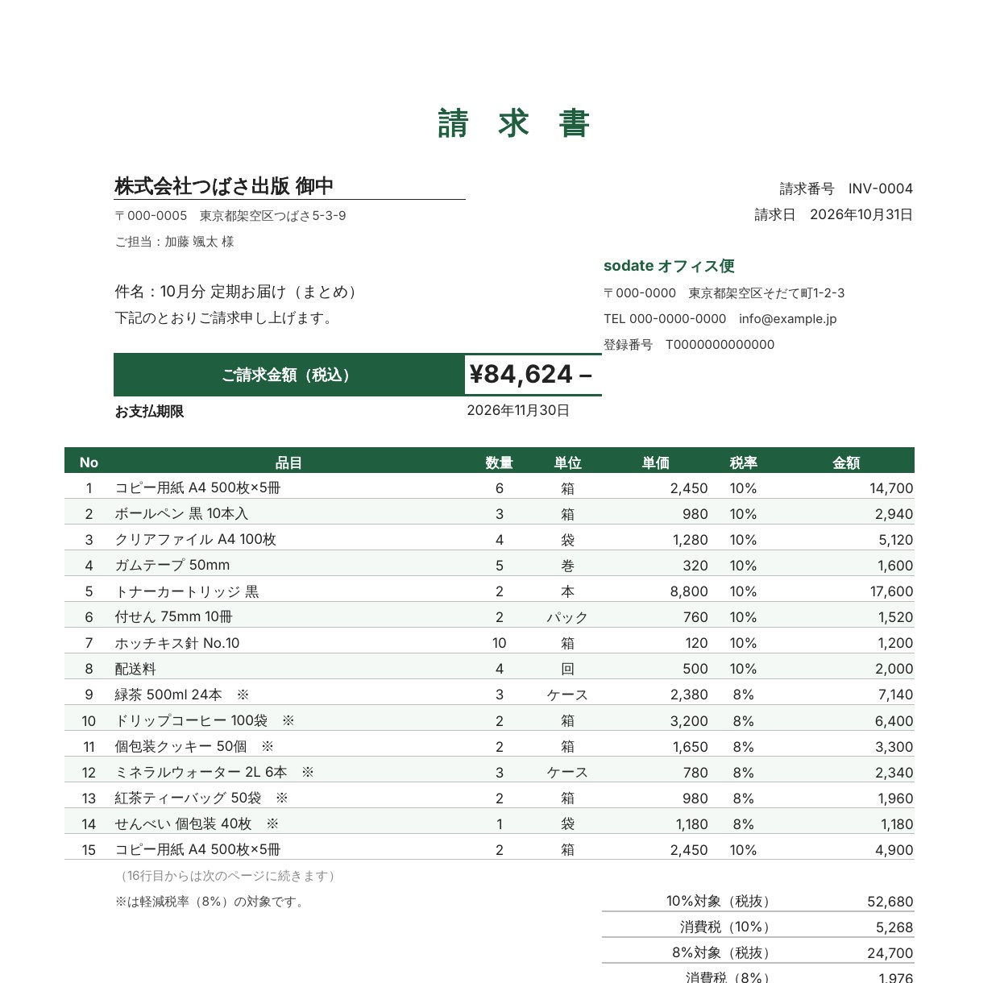
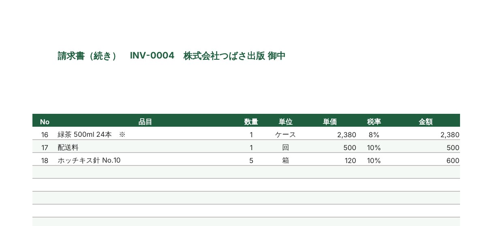

← 制作実績一覧へ戻る
見本ファイルつき
見積書・請求書の自動作成（Excelマクロ）
明細を入れてボタンを押すだけで、見積書・請求書のPDFができます。見積はそのまま請求書に、月末はまとめてPDFに。インボイス制度の書き方にも合わせました。

想定した依頼
「毎月、取引先ごとに請求書を1枚ずつ作っている。番号の付け間違いや計算ミスがこわいし、インボイス制度の書き方になっているかも不安。見積を出した案件は、そのまま請求書にしたい」。小さな会社やお店からのご相談を想定して作りました。
作ったもの
架空のお店「sodate オフィス便」（事務用品と飲み物をオフィスに届けるお店）の見積・請求のツールです。「操作」シートのボタンは3つです。
- 見積書を作る：見積番号を入れると、見積書のPDFができる
- 請求書にする：見積の中身を、新しい請求番号（INV-0001 の続き）でそのまま請求書に
- まとめてPDFにする：まだ出していない請求書をすべてPDFにして、月ごとのフォルダに保存。発行日を記録して二重発行を防ぐ







工夫した点
- インボイス制度の書き方：登録番号、税率ごと（10%・8%）の合計と消費税額を載せ、消費税は1枚・税率ごとに1回だけ計算して切り捨てます。軽減税率の品目には「※」をつけます。
- ミスはPDFにする前に止める：取引先が登録されていない、単価が空、税率が10・8以外などのときは、PDFを作らずに行を赤くして理由を書きます。
- 手で決めることを減らす：請求番号は自動で続き番号、支払期限は取引先ごとの支払条件（月末締め翌月末払い など）から自動で決まります。PDFは「請求書PDF/2026-10」のように月ごとに保存されます。
規模と制作時間
- 見本：取引先5社・見積3件・請求9件（10%と8%の混在、品目18行で2ページになる請求書、わざと取引先を登録していない1件を含む）
- 制作：仕様決めから完成まで 約30分（AIと一緒に作成。全12件の金額・消費税・支払期限を、別に計算した正解の表と照らし合わせ、実際のExcelでもPDFを作って確認）
見本ファイル
動かして試せる見本です（架空のデータと、作ったPDFの見本3つ入り）。
こんなご依頼にも対応できます
- 今使っている請求書のひな形に合わせて、自動で作れるようにしたい
- 納品書・領収書・発注書なども、同じように一覧から作りたい
- Googleスプレッドシートで作って、PDFをメールで送るところまで自動にしたい
注意
屋号・会社名・住所・登録番号・口座はすべて架空のサンプルです。税の扱いは一般的な例で、個別のご事情については税理士などの専門家にご確認ください。
ダウンロードしたファイルは、Windowsの設定でマクロが止められます。展開する前にzipファイルを右クリック →「プロパティ」→「許可する」にチェックしてから展開してください。